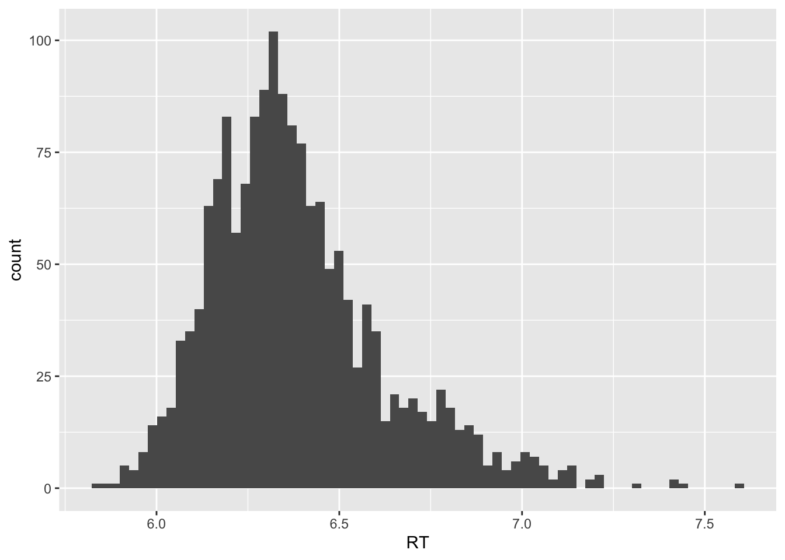

[1] 4.166667Descriptive Statistics
Measures of central tendency
We described in the lecture three main measures of central tendency: the mean, the median and the mode.
Mean
The mean is described in mathematically as:
\[ \overline{X}=\frac{\sum_{i=1}^{N}{X_i}}{N} \]
If we have a list of numbers, we could calculate it using the function sum() as in
There is however a built in function mean() that does this calculation:
mean(x)[1] 4.166667Median
Similarly, the median can be calculated by ranking the values and selecting those in the middle, but there is a convenience function median()
median(x)[1] 4If we have a dataset with a large outlier, the median is a more robust measurement of central tendency compared to the mean.
Mode
There is no built in function to calculate the mode in R. It is simply the value repeated the most in a dataset. The function table() can be used to create a count of the number of elements in a dataframe as a function of variable (so-called contingency tables). We will see in the next sections how to do that with tidyverse.
5-point summaries
There are several ways to calculate the five point summaries discussed in the lecture for a dataset. Using individual functions:
min(): minimum of a set of numbersmax(): maximum of a set of numbers-
quantile(): calculates the quantile based on a threshold.quantile(x, prob=0.25)provides the first quartile Q1quantile(x, prob=0.75)provides the third quartile Q3quantile(x, prob=0.5)corresponds to the median
IQR(): provides the Inter-Quartile Range, that is equivalent to Q3 - Q1range(): difference between maximum and minimum valuesmean()
median()
Taking again the example of the lexdec dataset and the Reaction Time RT
library(languageR)Warning: package 'languageR' was built under R version 4.3.3[1] 5.828946max(lexdec$RT)[1] 7.587311range(lexdec$RT)[1] 5.828946 7.587311quantile(lexdec$RT, prob = 0.25) 25%
6.214608 quantile(lexdec$RT, prob = 0.75) 75%
6.50204 75%
0.287432 IQR(lexdec$RT)[1] 0.287432However, most of the values above can be calculated using the convenient summary() function
summary(lexdec$RT) Min. 1st Qu. Median Mean 3rd Qu. Max.
5.829 6.215 6.346 6.385 6.502 7.587 Measures of dispersion
Standard deviation and variance
As described in the lecture the standard deviation of a dataset is calculated as follows:
for the full population: \(\sigma = \sqrt{\frac{\sum_{i=1}^{N}{(X_i-\mu)^2}}{N}}\)
for a sample of the population with the un-biased estimator: \(s = \sqrt{\frac{\sum_{i=1}^{N}{(X_i-\overline{X})^2}}{N-1}}\)
In R, the function sd() calculates the sample standard deviation. There is no built in function to calculate the full population \(\sigma\) , but in general, for N > 30 they are very close
sd(lexdec$RT)[1] 0.2415091Data summaries with tidyverse
In most cases, we have a most complex data structure where we want to calculate the summary statistics not only globally but in several cases of conditions.
For example, if we want to calculate the average and number of cases of the Reaction Time in the lexdec dataset for Male and Female and also between Native and non-native English speakers. We could perform it by individually filtering each group combination and calculating the mean and number of cases (length() provides the number of rows) as below:
Warning: package 'ggplot2' was built under R version 4.3.3Warning: package 'tibble' was built under R version 4.3.3Warning: package 'purrr' was built under R version 4.3.3── Attaching core tidyverse packages ──────────────────────── tidyverse 2.0.0 ──
✔ dplyr 1.1.4 ✔ readr 2.1.4
✔ forcats 1.0.0 ✔ stringr 1.5.1
✔ ggplot2 3.5.2 ✔ tibble 3.3.0
✔ lubridate 1.9.3 ✔ tidyr 1.3.1
✔ purrr 1.0.4
── Conflicts ────────────────────────────────────────── tidyverse_conflicts() ──
✖ dplyr::filter() masks stats::filter()
✖ dplyr::lag() masks stats::lag()
ℹ Use the conflicted package (<http://conflicted.r-lib.org/>) to force all conflicts to become errors# Male and Native English Speaker
lexdec_M_english <- lexdec %>% filter( (Sex=="M") & (NativeLanguage=="English"))
mean(lexdec_M_english$RT)[1] 6.361977length(lexdec_M_english$RT)[1] 395And this should be repeated for each of the four groups (Male-English, Male-Other, Female-English, Female-Other)
R has several ways to simplify these calculations. We will look at the approach with tidyverse packages by making use of the functions group_by() and summarize().
group_by() allows to specify grouping variables that would be applied to the next operation on the pipe. The function summarize() allows to create summary variables with the statistics of choice, including mean, sd, IQR, median, min, max, etc… (look at the online help).
The two functions can be combined as in the example below, where we group by Sex and NativeLanguage and ask to create three columns with names numObs , avgRT and sdRT containing the number of observations, mean Reaction Time and Standard Deviation Time respectively.
lexdec %>% group_by(Sex, NativeLanguage) %>%
summarize( numObs = n(), avgRT = mean(RT), sdRT = sd(RT))`summarise()` has grouped output by 'Sex'. You can override using the `.groups`
argument.# A tibble: 4 × 5
# Groups: Sex [2]
Sex NativeLanguage numObs avgRT sdRT
<fct> <fct> <int> <dbl> <dbl>
1 F English 553 6.29 0.195
2 F Other 553 6.47 0.274
3 M English 395 6.36 0.195
4 M Other 158 6.50 0.224When reporting summary descriptive statistics, it is common practice to provide the Standard Error (SE) that is the error on the sampling of the mean, which is calculated as
\[ s_{\overline{X}} = \frac{s}{\sqrt{N}} \]
We can extend the function above to add a column with the SE calculation, which can be done on the basis of the new columns sdRT and numObs:
lexdec %>% group_by(Sex, NativeLanguage) %>%
summarize( numObs = n(), avgRT = mean(RT), sdRT = sd(RT), seRT = sdRT / sqrt(numObs))`summarise()` has grouped output by 'Sex'. You can override using the `.groups`
argument.# A tibble: 4 × 6
# Groups: Sex [2]
Sex NativeLanguage numObs avgRT sdRT seRT
<fct> <fct> <int> <dbl> <dbl> <dbl>
1 F English 553 6.29 0.195 0.00830
2 F Other 553 6.47 0.274 0.0117
3 M English 395 6.36 0.195 0.00981
4 M Other 158 6.50 0.224 0.0178 Reporting Summary Descriptive Statistics
For the reporting of each group of data, either a tabular form or descriptive paragraph can be used, providing the values as calculated. An example for the lexdec example we used could be as follows:
Note
“The logarithmically transformed reaction time of Female English Native Speakers (M = 6.29, SE = 0.01, n = 553) was faster than Male English Native Speakers (M=6.36, SE = 0.01, n=395), which was faster than both Female (M=6.47, SE=0.01, n=553) and Male (M=6.50, SE=0.02, n=158) non-native Speakers.”
Note that the mean is denoted by a capital M. In this case we don’t have yet a statistical analysis to determine if the difference observed is significant. That should be reported as well and we will address it in the next lectures.
Data Normality checks
We mentioned in the lectures the importance to be able to check the normality of data or, as we will see of the residuals of a model fit, to ensure that our conclusions based on the statistical assessment of the results of a linear model are valid. In this section we briefly present how to perform in R some of the measures to determine deviation from normality.
Skewness and Kurtosis
Skewness and Kurtosis of a distribution can be computed using functions in the moments package. Before using it, we have to install the package
Warning: package 'moments' was built under R version 4.3.3The functions are easily called, kurtosis() and skewness() . Let’s see an example based on the lexdec dataset:
skewness(lexdec$RT)[1] 0.9930124A positive number implies a right-tailed distribution. If we plot again the histogram for the RT data, this is clearly visible.
lexdec %>% ggplot(aes(x=RT)) + geom_histogram(bins = 70)
If now we calculate the kurtosis:
kurtosis(lexdec$RT)[1] 4.405579A positive value indicates a distribution that is more concentrated in the center than a normal distribution.
So both measures point to a distribution deviating from normality on the data.
Q-Q plots
A Q-Q plot or “Quantile-Quantile” Plot, can be used to compare two distributions. It plots the quantiles from the measured data against what a theoretical or other distribution quantile would look like.
A straight line implies that the two distributions compared are very similar. this is done in R using the qqplot() function. To test for normality, we want to compare the data against a thoretical normal distribution. This a particular case implemented with the function qqnorm() .
If we look in our running example
qqline() adds a reference line for comparison. Clearly the data deviates from the line noting again the non-normality of the data.
An alternative to the above two commands is to use the qqPlot() function in the car package that produces charts with an error area more adequate for publication and reporting.
Shapiro-Wilk tests
Finally, a number of tests can be used to provide a quantified assessment of the normality or not of the data.
Here we present the Shapiro-Wilk test. This test considers a null hypothesis that the data is normally distributed. A significant outcome implies that the null hypothesis is not maintained and that the data is not normally distributed. It is implemented by the shapiro.test() function
shapiro.test(lexdec$RT)
Shapiro-Wilk normality test
data: lexdec$RT
W = 0.94738, p-value < 2.2e-16A p-value lower than a defined threshold implies that the null hypothesis is rejected. In this case, p<0.001 so we will assess the data as not being normally distributed.